1. 시작하기 · 전체 메뉴
홈에서 작업 종류를 고르거나, 모바일 화면 아래쪽의 전체메뉴를 눌러 원하는 기능으로 이동하세요.
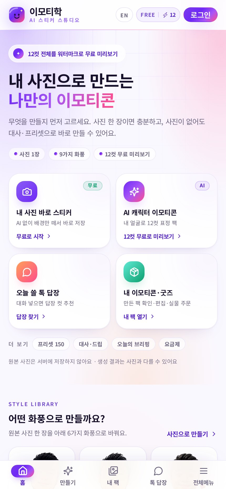
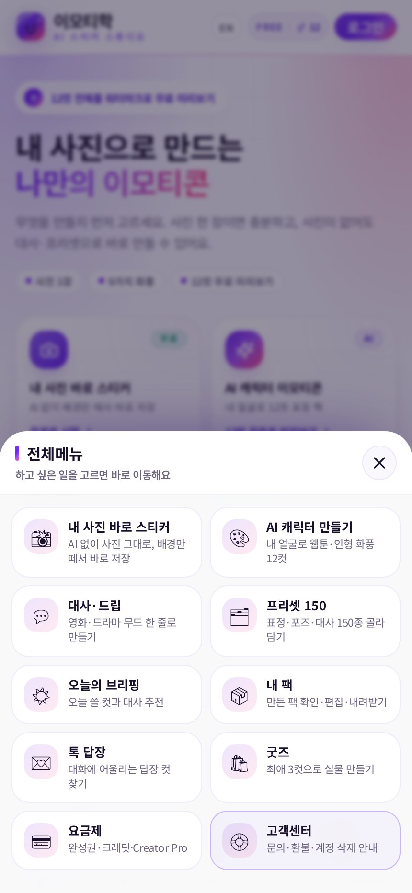
2. 내 사진 바로 스티커 만들기
AI가 이미지를 새로 그리지 않고, 선택한 사진에서 배경을 떼어 투명 스티커로 만들어요. 빠르게 PNG 한 장을 저장하거나 사진 여러 장을 묶을 때 이용하세요.
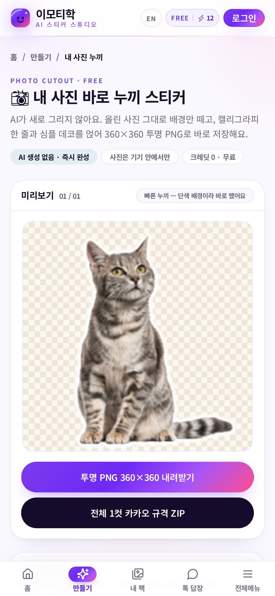
사진첩에서 선택하거나 카메라로 찍으세요. 한 번에 최대 12장까지 추가할 수 있습니다.
짧은 문구를 넣고 추천 대사, 글꼴, 문구 위치, 사진 구도, 감정·장식, 외곽선 두께를 조절하세요. 바꾼 내용은 미리보기에 반영됩니다.
투명 PNG 360×360 내려받기는 현재 컷을 저장하고, 전체 컷 카카오 규격 ZIP은 사진 여러 장을 묶어 저장합니다.
브라우저의 다운로드 목록이나 기기의 파일 앱에서 저장된 이미지를 확인해 채팅방에 사진으로 보내세요.
3. AI 캐릭터 이모티콘 팩 만들기
내 사진을 기준으로 캐릭터 시안을 만들고, 고른 시안으로 표정·상황 팩을 구성하는 흐름입니다. 화면에서 AI 제작이 이용 가능한지 먼저 확인하세요.
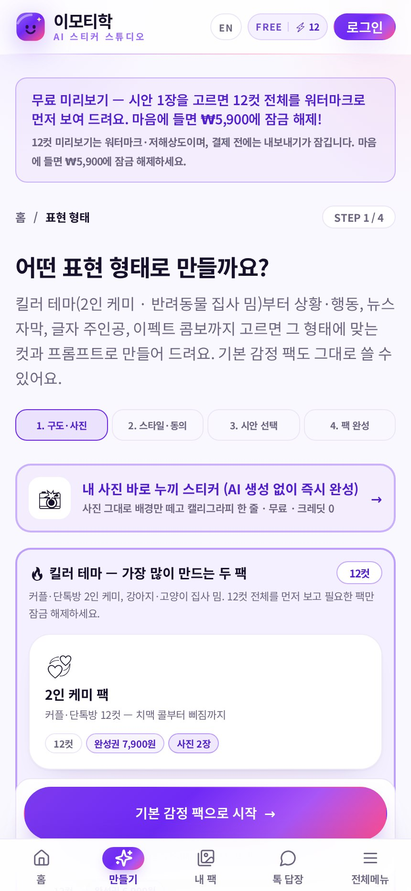
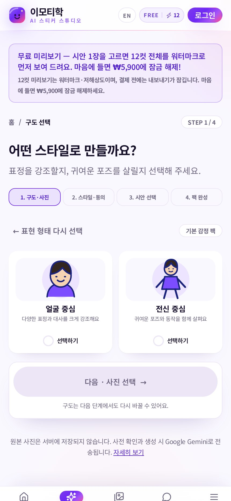
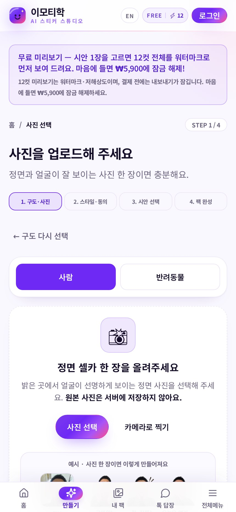
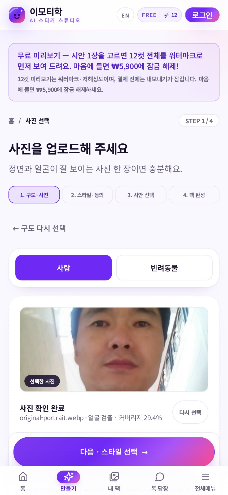
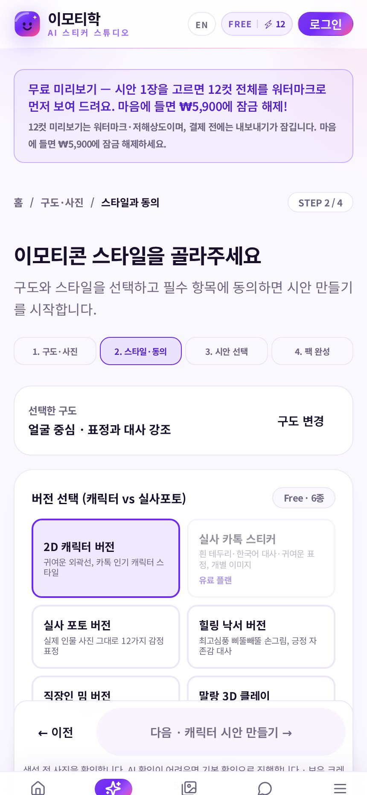
- 만들기 → AI 캐릭터 만들기를 엽니다. 준비 중·이용 제한 안내가 표시되면 AI 이용이 열릴 때까지 기다리거나, 사진 스티커·대사 스튜디오 등 현재 사용 가능한 기능을 이용하세요.
- 표현 형태를 고릅니다. 2인 케미 팩은 사진 두 장이 필요할 수 있고, 반려동물 테마는 반려동물 사진을 사용합니다. 기본 감정 팩은 일반적인 표정 중심 구성이에요.
- 구도를 선택하고 사람·반려동물 대상을 맞게 지정한 뒤, 정면에서 얼굴 또는 동물의 무늬가 선명하게 보이는 사진을 업로드합니다.
- 사진 확인 결과를 보고 흐리거나 얼굴이 가려졌다는 안내가 있으면 다른 사진으로 바꿉니다. 계속하려면 다음 · 스타일 선택을 누릅니다.
- 화풍과 필요한 동의를 확인하고 화면의 시안 만들기를 눌러 진행합니다. 생성된 후보 중 하나를 선택해 팩 구성을 확인하고 완성합니다. 단계·컷 수는 선택한 팩과 계정에 따라 다를 수 있어요.
- 생성된 팩은 내 팩에서 열어 컷별 편집과 내보내기를 합니다.
4. 대사·드립 스튜디오
사진 없이도 한 줄 대사와 표정·배경을 조합해 스티커를 만들 수 있어요. 저작권 있는 작품의 문장을 복사하는 대신 장르의 분위기만 담은 오리지널 문구를 사용합니다.
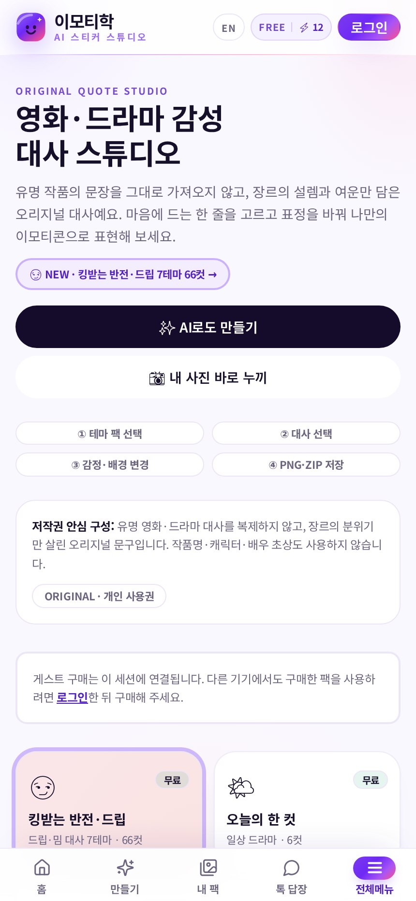
- 전체메뉴에서 대사·드립을 엽니다.
- 무료·유료 테마 중 원하는 팩을 선택하고, 목록에서 대사를 고릅니다.
- 추천 감정을 그대로 쓰거나 표정과 배경을 바꿔 미리보기를 확인합니다.
- 선택한 컷을 PNG로 저장하거나, 이용 권한이 있는 팩은 여러 컷 ZIP으로 저장합니다. 화면에 표시된 크레딧·잠금 안내를 확인하세요.
5. 프리셋 150 · 큐레이션 패키지
자주 쓰는 감정·포즈·대사 또는 시즌·관계별 컷 구성을 골라 팩 제작 단계에 반영합니다.
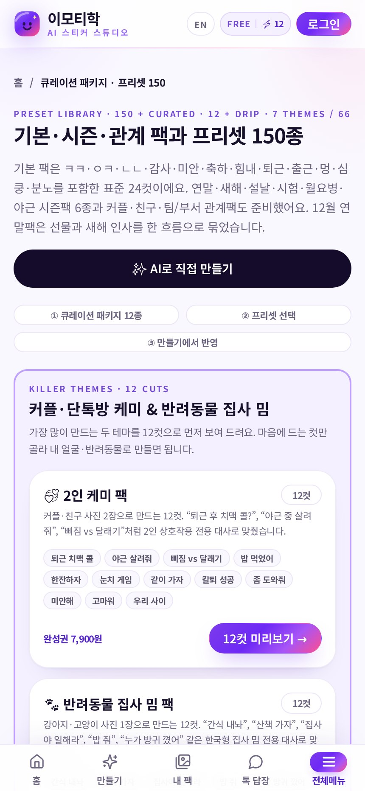
- 프리셋 150을 열어 킬러 테마나 기본·시즌·관계 큐레이션을 살펴봅니다.
- 패키지의 대사와 컷 수를 확인하고, 원하는 경우 구성 보기로 내용을 펼쳐 봅니다.
- 이 패키지로 팩 만들기 또는 프리셋 항목을 선택하면 AI 제작 화면에 선택값이 이어집니다.
- 사진·구도·화풍을 확인한 뒤 팩 만들기를 진행합니다. 시즌 패키지는 제공되는 시기에 따라 구성과 노출이 달라질 수 있습니다.
6. 톡 답장 추천
대화 내용을 붙여넣으면 상황과 감정에 어울리는 답장 표현을 찾습니다. 이미 AI 팩을 만든 경우 내 캐릭터 컷을 활용할 수 있습니다.
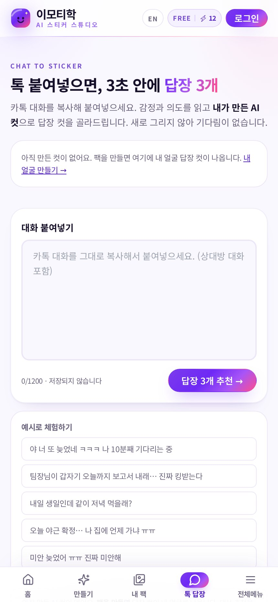
- 전체메뉴에서 톡 답장을 엽니다.
- 상대의 대화를 복사해 입력란에 붙여넣거나, 예시 대화로 체험합니다.
- 답장 3개 추천을 눌러 결과를 확인하고 상황에 맞는 문구·컷을 선택합니다.
- 내 AI 컷이 아직 없다면 추천 문구를 먼저 확인하고, 사진 팩을 만든 뒤 개인 캐릭터 컷을 활용해 보세요.
7. 오늘의 브리핑
오늘 쓰기 좋은 대사 몇 개를 추천합니다. 지금은 접속해서 확인하는 화면이며, 푸시 알림은 제공 여부를 앱 공지에서 확인하세요.
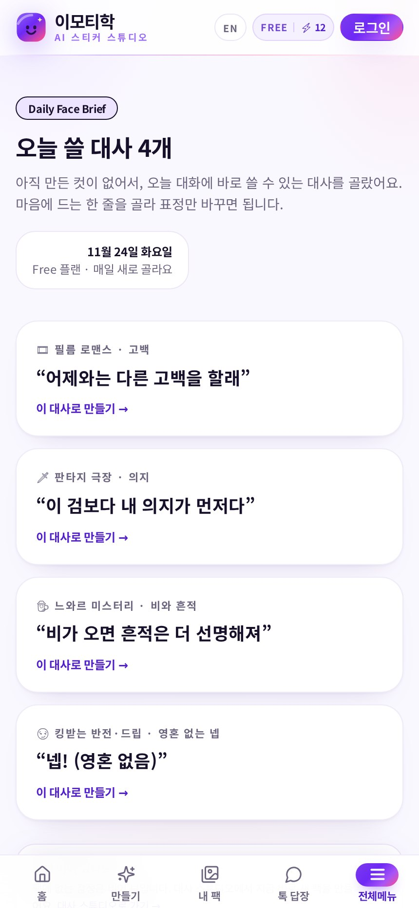
- 전체메뉴에서 오늘의 브리핑을 엽니다.
- 오늘 제안된 대사와 테마를 확인합니다.
- 원하는 카드의 이 대사로 만들기를 눌러 제작 화면으로 이동하고 표정·스타일을 선택합니다.
8. 내 팩 · 편집 · 파일 내보내기
만든 스티커 팩을 확인하고 컷별로 편집하거나 파일로 내려받는 공간입니다.
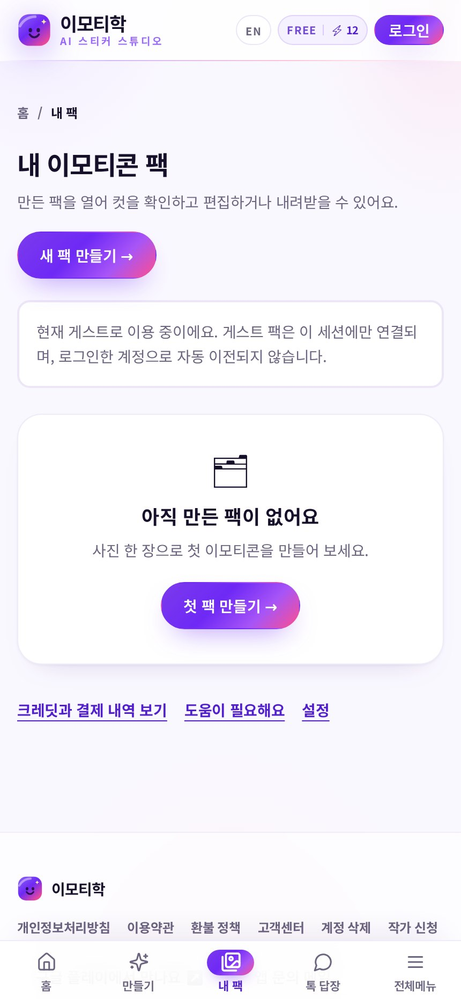
- 하단 메뉴의 내 팩을 누릅니다.
- 팩을 선택해 컷을 열고, 제공되는 편집 메뉴에서 문구·표정·효과 등을 변경합니다.
- 컷 하나는 PNG로, 팩 전체는 전체 PNG ZIP 다운로드로 저장할 수 있습니다. 팩에 따라 카카오 규격 ZIP 또는 GIF/APNG 내보내기 항목이 나타날 수 있어요.
- 무료 미리보기 팩은 워터마크가 있고 내보내기가 잠길 수 있습니다. 잠금 해제 안내와 가격을 확인한 뒤 필요할 때만 결제하세요.
9. 굿즈
내 팩의 컷을 실물 상품에 활용하는 메뉴입니다.
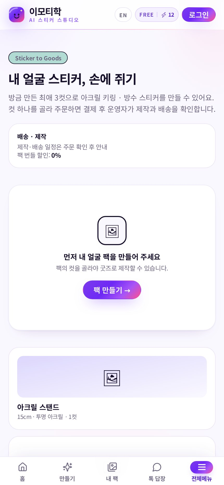
- 먼저 내 얼굴 또는 반려동물 팩을 만듭니다.
- 굿즈 화면에서 사용할 컷과 상품을 선택할 수 있을 때 구성·제작·배송 정보를 확인합니다.
- 주문 버튼과 결제 안내가 실제로 활성화된 경우에만 주문을 진행하세요. 제작·배송 여부는 화면의 최신 공지를 우선합니다.
10. 요금제 · 결제 확인
무료 미리보기, 팩 단건 완성권, 크레딧, Creator Pro 등 이용 방식이 다릅니다. 상품을 선택하기 전에 포함 항목과 최종 결제 금액을 확인하세요.
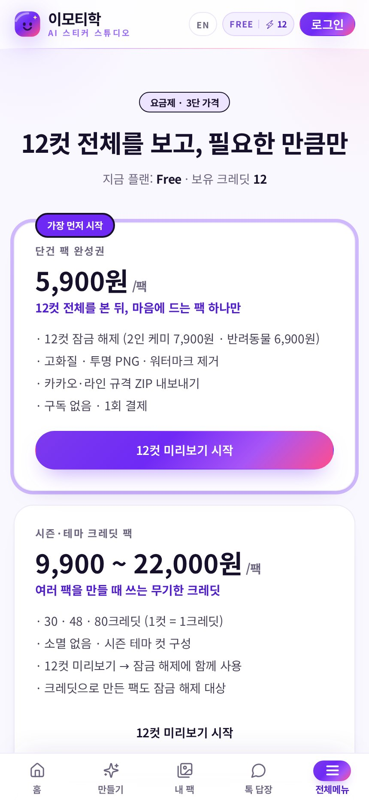

- 전체메뉴의 요금제에서 무료 미리보기와 유료 상품의 차이를 읽습니다.
- 단건 팩 완성권은 해당 팩 잠금 해제, 크레딧은 컷 생성 등 표시된 용도로 쓰입니다. 상품별 크레딧·유효 조건을 확인하세요.
- 구매를 선택했다면 결제창의 최종 금액·결제수단·환불 조건을 확인하고 완료합니다.
- 결제 후 문제가 있으면 주문번호를 기록해 고객센터에 문의합니다.
11. 고객센터 · 계정과 개인정보
결제·환불 문의, 생성 실패, 계정 및 콘텐츠 관리 안내를 확인할 수 있습니다.
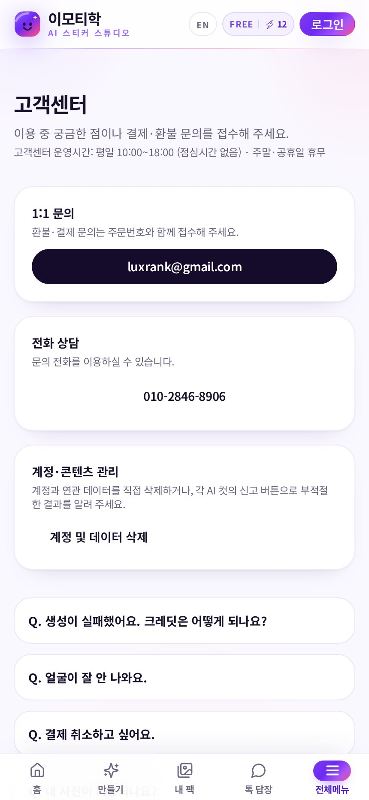
- 생성 실패·결제·환불 문의에는 주문번호와 오류가 발생한 시점을 함께 적으면 확인에 도움이 됩니다.
- 계정 및 연관 데이터 삭제는 고객센터의 계정 및 데이터 삭제 안내에서 진행합니다.
- 부적절한 AI 결과는 해당 컷의 신고 기능을 이용합니다.
- 사진 처리·보관 및 AI 제공업체 전송 정보는 개인정보 처리방침과 작업 단계에 표시된 동의 문구를 확인하세요.
이미지 출처와 캡처 범위
- 앱 화면·브랜드 이미지: 로컬 실행 중인 이모티학 웹 앱을 모바일 크기 브라우저에서 직접 캡처했습니다. 홈 화면에 보이는 캐릭터 샘플과 로고는 프로젝트에 포함된 앱 리소스입니다.
- 사진 스티커의 고양이 예시: Petr Kratochvil, “White Cat Sitting”, Public Domain Pictures, 원본 페이지. 페이지의 라이선스 표시를 확인했으며 CC0 Public Domain (상업적 이용 포함, 출처 표기 불필요)으로 제공됩니다. 이 설명서에는 출처를 함께 기록합니다.
- AI 사진 확인 화면: 공개 배포 중인 앱에 동봉된 데모 원본 사진을 사용했습니다. 대화에서 별도의 개인 사진을 제공받거나 임의로 추가하지 않았습니다.
- 화면 대체 글꼴: 캡처 환경에 한글·이모지 시스템 글꼴이 없어 읽기 쉬운 Noto Sans KR·Noto Emoji 글꼴(SIL Open Font License)을 캡처에만 적용했습니다. 화면 배치·문구·이미지·버튼은 앱에서 캡처한 것이며, 글꼴 외관은 실제 사용자 기기와 다를 수 있습니다.
- AI 생성 결과: 이 설명서를 만들며 유료·외부 AI 이미지 생성 호출은 실행하지 않았습니다. 실제 생성 결과 캡처는 테스트·비용·계정 승인을 받은 후에만 추가할 수 있습니다.
이미지별 자세한 라이선스 정보는 이미지 출처·라이선스에서 확인할 수 있습니다.